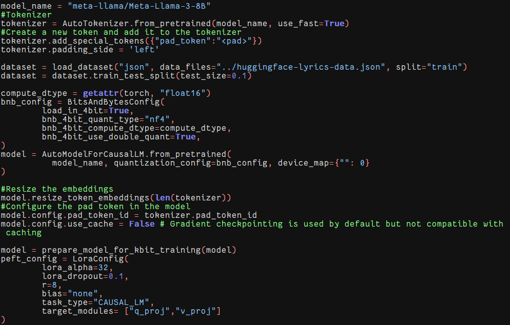
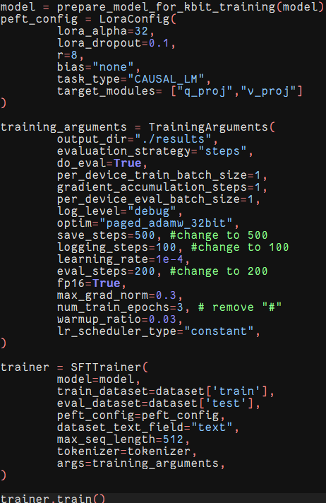

Machine Learning
Lyrics Generation using GPT-2 Transformers

Lyrics Generation using GPT-2 Transformers
Welcome to our lyrics generation project powered by machine learning! Our tool utilizes a pre-trained language model, fine-tuned on a dataset of song lyrics, to automatically generate customized song lyrics based on user input features such as genre, artist, and style
The primary function of our tool is to provide a creative and customizable solution for generating song lyrics in a range of styles. Users can specify desired features like genre and artist, and our model will produce coherent and stylistically consistent lyrics tailored to those criteria.

Source: Kaggle Dataset - Scrapped Lyrics from 6 Genres
Description:
The lyrics dataset consists of a comprehensive collection of song lyrics spanning six distinct genres, including rock, pop, hip-hop, and more. Each entry in the dataset represents the lyrics of a specific song, providing a rich source of textual data for training our machine learning model.
Content:
The dataset encompasses diverse lyrical content from various artists, offering a broad spectrum of linguistic styles and thematic elements across different music genres.
Size:
The dataset contains thousands of song lyrics entries, enabling robust model training and lyric generation.

Source: Kaggle Dataset - Scrapped Lyrics from 6 Genres
Description:
The artists dataset complements the lyrics dataset by providing metadata about the artists associated with the songs in our main dataset. It includes information such as artist names, genres, and potentially additional attributes.
Purpose:
This dataset enhances the context and relevance of our lyrics generation model, enabling genre-specific or artist-specific lyric generation based on the associated metadata.

Source: HuggingArtist - Scrapped Lyrics from Genius Lyrics - 41 Artists
Description:
This dataset is made of webscraped lyrics of 41 artists that are Spotify's Top 100 artists. The lyrics are all in English. We chose these artists because of their popularity ensures a rich corpus of work. Additionally, we thought these artists would be more engaging and relevant.
Purpose:
The dataset encompasses diverse lyrical content from various artists, offering a broad spectrum of linguistic styles and thematic elements across different music genres.
Most common words in lyrics


Sentiment Analysis

GPT-2 Transformers
GPT-2, a powerful pretrained model with 1.5 billion parameters, serves as our foundation. By fine-tuning this model on a dataset of 12,500 popular rock song lyrics, we enable it to generate lyrics that emulate human-like quality and style.
The process begins with data preparation, where we tokenize and structure the lyrics dataset for optimal model training. Through a training phase using GPU acceleration, we refine GPT-2 to predict coherent verses based on input contexts.
Upon training completion, our model seamlessly generates lyrics tailored to specific song styles and lengths. We implement techniques like temperature scaling and top-p filtering to enhance the creativity and relevance of generated text.
To evaluate performance, we employ the BLEU metric, achieving a significant improvement over non-fine-tuned GPT-2. Additionally, subjective evaluations through a custom web interface demonstrate the model's ability to produce lyrics that maintain context and rhythm.
Our project exemplifies the potential of machine learning in creative endeavors, showcasing how GPT-2 can be harnessed to inspire and assist in songwriting. Join us on this exploration of AI-driven lyrics generation, pushing boundaries and unlocking new possibilities in music composition.
Results

Rouge Score

Llama 3 8B
Llama 3 is Meta's newest open source LLM. Llama 3 was pretrained on over 15 trillion tokens of data from publicly available sources. The fine-tuning data includes publicly available instruction datasets, as well as over 10M human-annotated examples. The pretraining data was cut off in March 2023, so the data is very fresh. By fine-tuning this model on a dataset of 25,000 popular song lyrics, we hoped to generate lyrics that were stylistically and topically diverse.
We started by loading the pretrained Llama 3 model from huggingface. We then used AutoTokenizer to make a tokenizer from the model. We then set the compute_dtype to float16 to reduce computation resources and set up BitsandBytes configuration to run on one GPU.

For the actual training, we configure LoRA for efficient fine tuning. LoRA ensures that we only fine tune the most important parameters, so we don't have to worry about 8 billion parameters at a time. We had to reduce the number of epochs and batch size due to our computational limitations. Finally, the actual trainer is an SFTTrainer, which implements reiforcement learning.

Unfortunately, after we completed training of the model, we were unable to generate lyrical text due to a myriad of errors. We were unable to fix this issue in time.